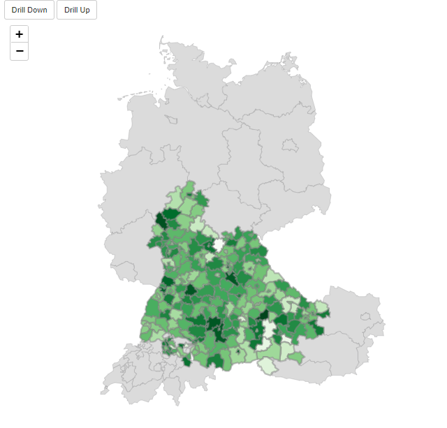

Multilevel.RmdIn this article, we demonstrate how to set up a leafdown map with three map levels and show that it is an natural extension of the two map level case. (More than two map levels is supported from leafdown version 1.1.)

Let’s first load the libraries we are going to use for our app.
library(leafdown)
library(leaflet)
library(shiny)
library(dplyr)
library(shinycssloaders)
library(shinyjs)
library(dplyr)
library(raster)(Note that the shinyjs package is loaded for some automatic warning messages that the leafdown map can return to the user of the shiny app.)
As usual, we first create a list of SpatialPolygonsDataFrames (spdfs) for the regions we want to display on our map. (Further details can be found in the Introduction article.)
list (spdfs_list)
│
└───spdf (spdf of first map level)
│
└───spdf (spdf of second map level)
│
└───spdf (spdf of third map level)
# Germany
ger0 <- raster::getData(country = "Germany", level = 0)
ger1 <- raster::getData(country = "Germany", level = 1)
ger2 <- raster::getData(country = "Germany", level = 2)
# Austria
a0 <- raster::getData(country = "Austria", level = 0)
a1 <- raster::getData(country = "Austria", level = 1)
a2 <- raster::getData(country = "Austria", level = 2)
# Switzerland
ch0 <- raster::getData(country = "Switzerland", level = 0)
ch1 <- raster::getData(country = "Switzerland", level = 1)
ch2 <- raster::getData(country = "Switzerland", level = 2)For this app, we simply generate random target values y.
set.seed(20220106)
# Simulate data
data_sim_y_level_3 <- spdfs_list[[3]]@data
data_sim_y_level_3$y <- round(rnorm(nrow(data_sim_y_level_3), 1e2, sd = 5e2), 0)
data_sim_y_level_2 <- data_sim_y_level_3 %>% group_by(NAME_0, NAME_1) %>% summarise(y = sum(y))
data_sim_y_level_1 <- data_sim_y_level_2 %>% group_by(NAME_0) %>% summarise(y = sum(y))
# Assign map levels
data_sim_y_level_3$level <- 3
data_sim_y_level_2$level <- 2
data_sim_y_level_1$level <- 1
# Assign area names
data_sim_y_level_3$area <- data_sim_y_level_3$NAME_2
data_sim_y_level_2$area <- data_sim_y_level_2$NAME_1
data_sim_y_level_1$area <- data_sim_y_level_1$NAME_0
# Combine data of map levels
data_sim_y <- rbind(
data_sim_y_level_3[, c("area", "y", "level")],
data_sim_y_level_2[, c("area", "y", "level")],
data_sim_y_level_1[, c("area", "y", "level")]
)
head(data_sim_y)
#> area y level
#> 1 Eisenstadt 1086 3
#> 2 Eisenstadt Umgebung 404 3
#> 3 Güssing 502 3
#> 4 Jennersdorf 752 3
#> 5 Mattersburg 329 3
#> 6 Neusiedl am See 184 3In order for a leafdown map to know which shapes of a lower map level belong to the shapes in the upper map level, we need to specify how the data of the spdfs of different map levels need to be joined. This is defined by the join_map_levels_by argument, which is a named vector of length length(spdfs_list) - 1, whereby
The name of an element specifies the join column in the respective upper map level and the actual element the join column of the lower map level.
Let’s have a look at the data of our the spdfs in spdf_list:
head(spdfs_list[[1]]@data)
#> GID_0 NAME_0
#> 1 AUT Austria
#> 2 CHE Switzerland
#> 3 DEU Germany
head(spdfs_list[[2]]@data[, c("GID_0", "NAME_0", "GID_1", "NAME_1")])
#> GID_0 NAME_0 GID_1 NAME_1
#> 1 AUT Austria AUT.1_1 Burgenland
#> 2 AUT Austria AUT.2_1 Kärnten
#> 3 AUT Austria AUT.3_1 Niederösterreich
#> 4 AUT Austria AUT.4_1 Oberösterreich
#> 5 AUT Austria AUT.5_1 Salzburg
#> 6 AUT Austria AUT.6_1 SteiermarkIn this example, map levels 1 and 2 can be joined by their column “GID_0”. So the name of first element is “GID_0” (the respective column name of the first map level) and the first element is also “GID_0” (the respective column name of the first map level):
head(spdfs_list[[3]]@data[, c("GID_0", "NAME_0", "GID_1", "NAME_1", "GID_2", "NAME_2")])
#> GID_0 NAME_0 GID_1 NAME_1 GID_2 NAME_2
#> 1 AUT Austria AUT.1_1 Burgenland AUT.1.2_1 Eisenstadt
#> 2 AUT Austria AUT.1_1 Burgenland AUT.1.1_1 Eisenstadt Umgebung
#> 3 AUT Austria AUT.1_1 Burgenland AUT.1.3_1 Güssing
#> 4 AUT Austria AUT.1_1 Burgenland AUT.1.4_1 Jennersdorf
#> 5 AUT Austria AUT.1_1 Burgenland AUT.1.5_1 Mattersburg
#> 6 AUT Austria AUT.1_1 Burgenland AUT.1.6_1 Neusiedl am SeeWe see, that map levels 2 and 3 can be joined by their column “GID_1”.
This translates into the following join_map_levels_by argument:
library(leafdown)
library(leaflet)
library(shiny)
library(dplyr)
library(shinycssloaders)
library(shinyjs)
library(dplyr)
library(raster)
# Germany
ger0 <- raster::getData(country = "Germany", level = 0)
ger1 <- raster::getData(country = "Germany", level = 1)
ger2 <- raster::getData(country = "Germany", level = 2)
# Austria
a0 <- raster::getData(country = "Austria", level = 0)
a1 <- raster::getData(country = "Austria", level = 1)
a2 <- raster::getData(country = "Austria", level = 2)
# Switzerland
ch0 <- raster::getData(country = "Switzerland", level = 0)
ch1 <- raster::getData(country = "Switzerland", level = 1)
ch2 <- raster::getData(country = "Switzerland", level = 2)
# load the shapes for the three levels
spdfs_list <- list(rbind(aut0, ch0, ger0), rbind(aut1, ch1, ger1), rbind(aut2, ch2, ger2))
# Simulate some data
set.seed(20220106)
data_sim_y_level_3 <- spdfs_list[[3]]@data
data_sim_y_level_3$y <- rnorm(nrow(data_sim_y_level_3), 1e2, sd = 5e2)
data_sim_y_level_2 <- data_sim_y_level_3 %>% group_by(NAME_0, NAME_1) %>% summarise(y = sum(y))
data_sim_y_level_1 <- data_sim_y_level_2 %>% group_by(NAME_0) %>% summarise(y = sum(y))
data_sim_y_level_3$level <- 3
data_sim_y_level_2$level <- 2
data_sim_y_level_1$level <- 1
data_sim_y_level_3$area <- data_sim_y_level_3$NAME_2
data_sim_y_level_2$area <- data_sim_y_level_2$NAME_1
data_sim_y_level_1$area <- data_sim_y_level_1$NAME_0
data_sim_y <- rbind(
data_sim_y_level_3[, c("area", "y", "level")],
data_sim_y_level_2[, c("area", "y", "level")],
data_sim_y_level_1[, c("area", "y", "level")]
)
data_sim_y$y <- round(data_sim_y$y, 0)
ui <- fluidPage(
mainPanel(
# set the background of the map-container to be white
tags$head(
tags$style(HTML(".leaflet-container { background: #fff; height: 100%}")),
# workaround for the NA in leaflet legend see https://github.com/rstudio/leaflet/issues/615
tags$style(HTML(".leaflet-control div:last-child {clear: both;}"))
),
# we need shinyjs for the leafdown map
useShinyjs(),
fluidRow(
# the two buttons used for drilling
actionButton("drill_down", "Drill Down"),
actionButton("drill_up", "Drill Up"),
# the actual map element
withSpinner(leafletOutput("leafdown", height = 800), type = 8)
)
)
)
# Little helper function for hover labels
create_labels <- function(data, map_level) {
labels <- sprintf(
"<strong>%s</strong><br/>%g</sup>",
data[, paste0("NAME_", map_level - 1)], data$y
)
labels %>% lapply(htmltools::HTML)
}
server <- function(input, output) {
# create leafdown object
my_leafdown <- Leafdown$new(
spdfs_list, "leafdown", input, join_map_levels_by = c("GID_0" = "GID_0", "GID_1" = "GID_1")
)
rv <- reactiveValues()
rv$update_leafdown <- 0
# observers for the drilling buttons
observeEvent(input$drill_down, {
my_leafdown$drill_down()
rv$update_leafdown <- rv$update_leafdown + 1
})
observeEvent(input$drill_up, {
my_leafdown$drill_up()
rv$update_leafdown <- rv$update_leafdown + 1
})
data <- reactive({
req(rv$update_leafdown)
meta_data <- my_leafdown$curr_data
curr_map_level <- my_leafdown$curr_map_level
data_curr_map_level <- data_sim_y[data_sim_y$level == curr_map_level, ]
join_col_lhs <- paste0("NAME_", curr_map_level - 1)
data <- meta_data %>% left_join(data_curr_map_level, by = setNames("area", join_col_lhs))
# add the data back to the leafdown object
my_leafdown$add_data(data)
data
})
# this is where the leafdown magic happens
output$leafdown <- renderLeaflet({
req(spdfs_list)
req(data)
data <- data()
labels <- create_labels(data, my_leafdown$curr_map_level)
# draw the leafdown object
my_leafdown$draw_leafdown(
fillColor = ~leaflet::colorNumeric("Greens", data$y)(data$y),
weight = 3, fillOpacity = 1, color = "grey", label = labels
)
})
}